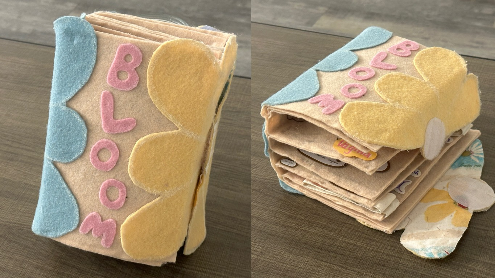
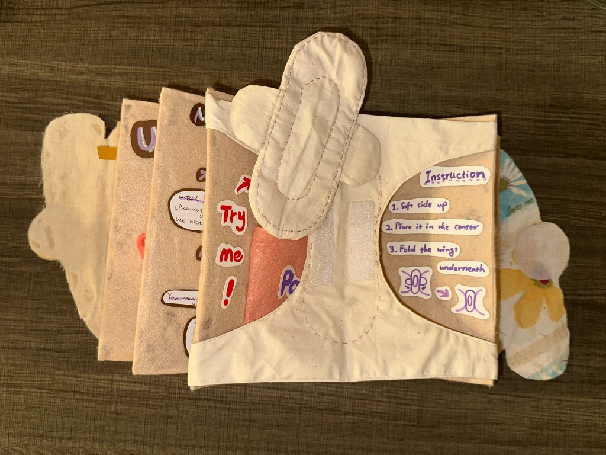
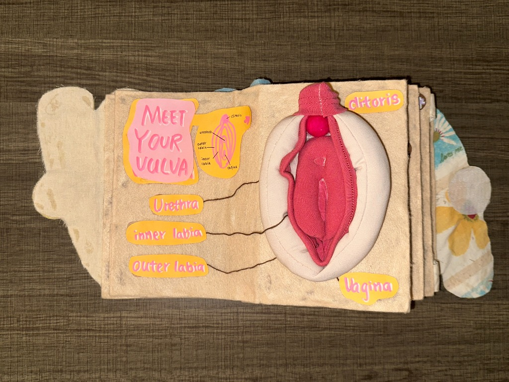
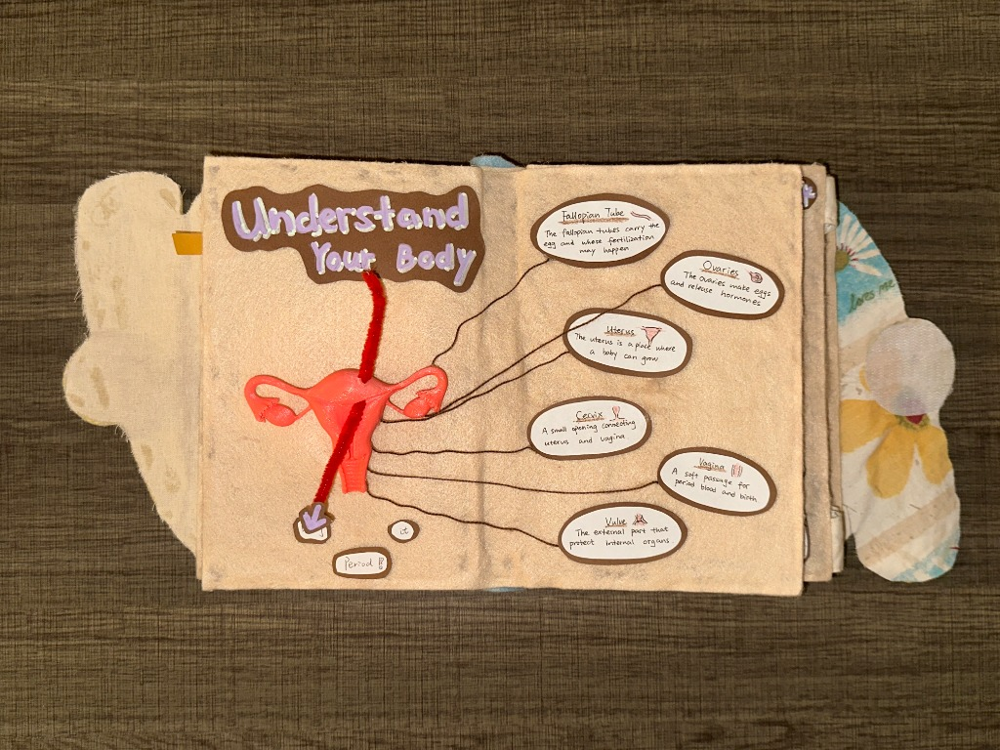
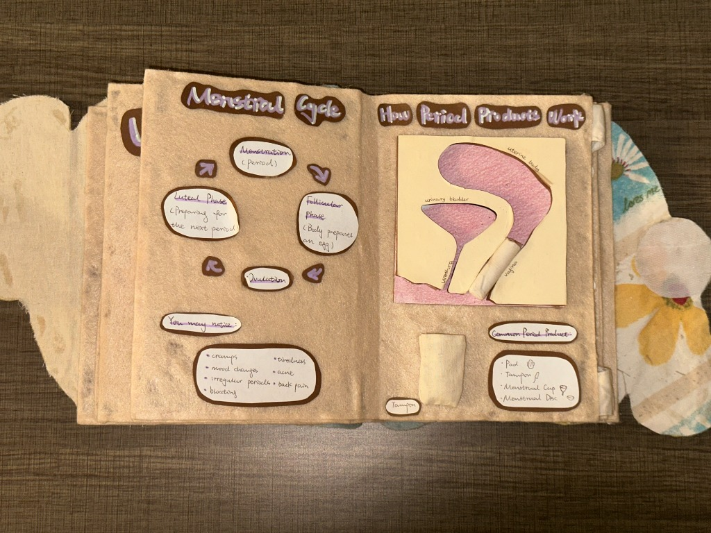
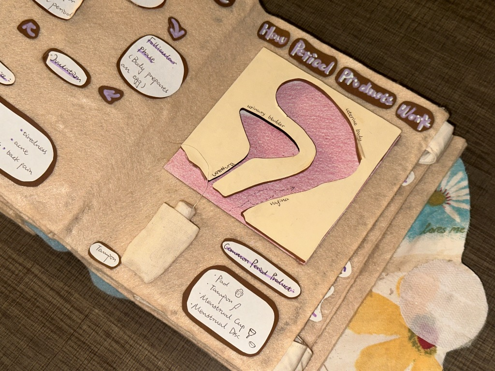
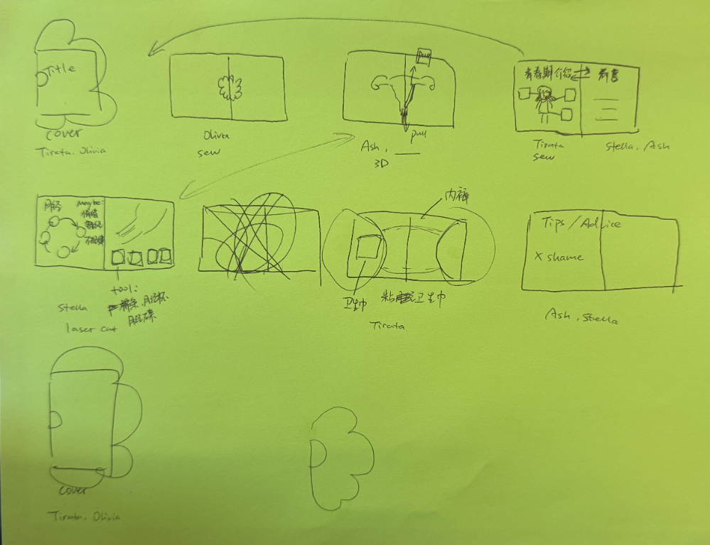
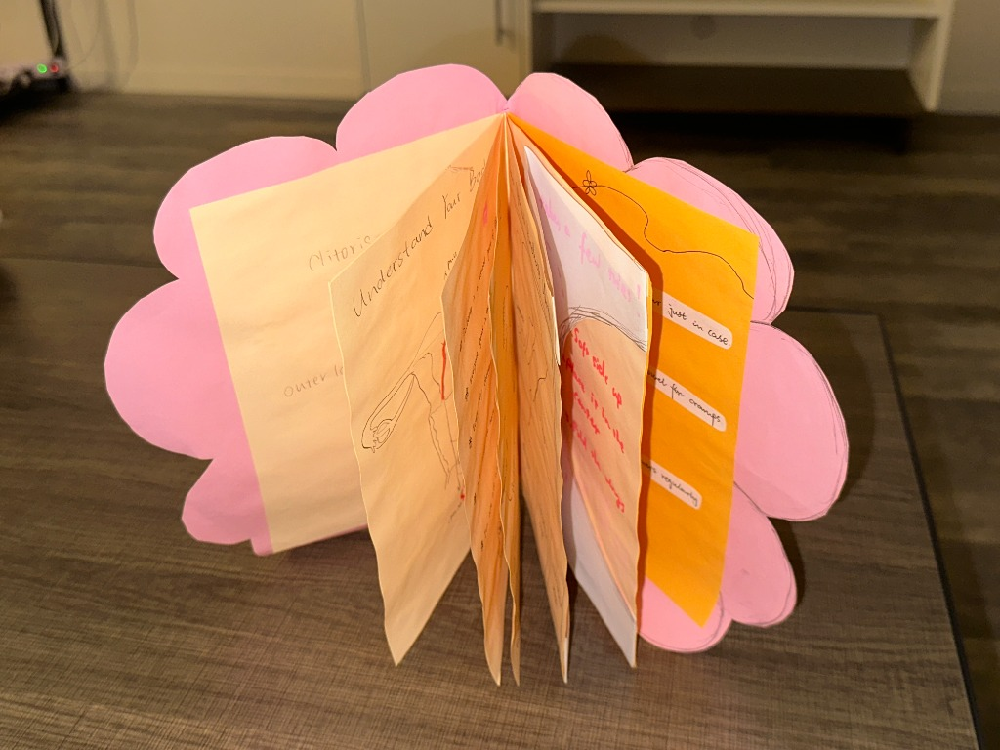
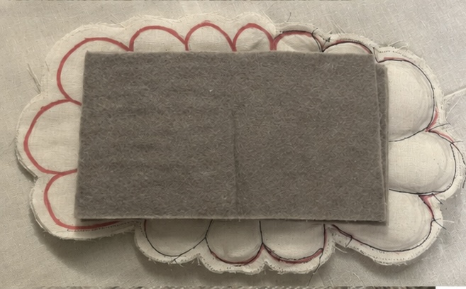

‹ Back to Work
‹ Back to Work
01
BLOOM
Making puberty education a hands-on experience.
Bloom is an interactive fabric book that explores how physical interaction can make puberty and menstrual health education more approachable.
It is for young learners. Diagrams and written explanations can make an unfamiliar body feel abstract, and a sensitive topic hard to ask about.

My contribution
I contributed throughout Bloom’s design process, from early concept development and interaction design to prototyping, fabrication, evaluation, and iteration. I independently designed the book’s introduction and closing sections, with a particular focus on laser-cut fabrication, while collaborating with the team on the overall structure and final prototype.
02
See Bloom in Action
A closer look at Bloom’s tactile activities and interactive components.
03
Designing the Interactions
Each page uses a different physical action, matched to what it needs to explain.

Action
A sewn underwear model opens to a top-down view. The learner takes a fabric pad from a “Try Me” pocket and places it on a dashed outline, so a familiar object makes the task recognizable.

Touch
A plush vulva, sewn in layers and labeled by hand, lets someone recognize external anatomy by shape and touch. Stuffing made the form readable, and it also made the page thicker than we intended.

Dimension
A 3D-printed uterus sits on the page, with yarn connecting each part to a label. A red chenille stem pulls downward to suggest bleeding, but it passes through the upper uterus rather than the endometrium.
A closer look
Making Anatomy Interactive
The menstrual cycle page had to show where a tampon sits. A flat diagram can name the parts. It cannot let someone try the placement.
I laser-cut a labeled side-view model. With the team, we made a small tampon from tissue paper and thread and kept it in a sewn pocket. A learner takes it out and places it in the model.
When we asked people to place it, the side view made the path easier to follow. The model still needed a cue such as “place tampon here,” and the tissue piece was too fragile to reuse.


04
From Concept to Prototype
Sketches and a paper book set the page sequence before we cut fabric. Fabric added softness and pockets, but it was too soft to hold the models, so cardboard went between the layers. The finished book was thicker than expected, and we reinforced the spine. A stuffed flower cover did not fit that thickness, so the cover became felt petals and Velcro, which held but took force to open.



05
Evaluation & Reflection
Evaluation & Insights
We showed Bloom at a showcase attended by more than 50 visitors, including professors and UX researchers. It was not a formal usability study, and it does not show whether the book improves comprehension.
People could start without instructions
Visitors touched and opened pieces before we explained them. On the pad page, most people we watched found the pad and completed the placement. The pieces themselves were enough to invite a first try.
Interest was not the same as clarity
Unprompted comments described the plush anatomy as less intimidating than a textbook diagram. Wanting to touch the page did not show that someone understood it.
Several interactions still need work
The uterus stem shows bleeding in the wrong place. The tampon needs a placement cue and a stronger material. Velcro catches on the pad pocket, and the book is thicker than we planned. These are changes for a later version, not revisions already in the prototype.
Reflection & Next Steps
Working in fabric made the interaction and the constraint the same thing. Softness made the vulva easier to approach, and it also made the book thick. A piece someone can place makes a tampon’s path clearer than a diagram, and it still fails if the cue is missing or the anatomy is wrong.
The showcase showed me where people were willing to touch the book. It did not show whether a young learner would understand it. If I continued, I would revise the unclear pieces and test that version with the learners and educators the book is for.